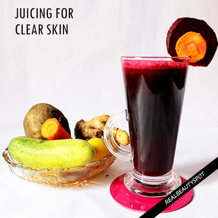
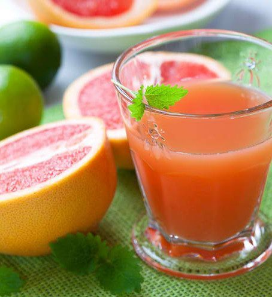
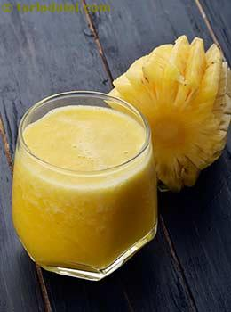

Beginner Juice Recipe - Simply Jillicious
2021.06.18 12:40
Home About Recipes Recipe Index Breakfast Main Entrees Breads and Muffins Dessert Snacks Smoothies, Shakes and Drinks Dips and Sauces Side Dishes Holiday Recipes How-to recipes Instant Pot Lifestyle Shop Brands I Love Foodie Tees My Favorites Contact Breakfast / Dairy Free / Egg Free / Nut Free / Paleo / Smoothies, Shakes and Drinks / Snacks / Vegan
Beginner Juice Recipe
This post may contain affiliate links.
Tweet Pin Share 440 SharesBeginner juice recipes are simple, have very little prep time, and are absolutely delicious. Green juice is a fun way to get some extra nutrients into your diet.
I started juicing about a couple months ago and haven’t looked back since! Homemade juice recipes taste sooo fresh. And knowing they’re free of added sugar and artificial junk makes it taste even better. Natural juices are always the way to go.
Do I Need a Juicer For Beginner Juice Recipes or Can I Use a Blender?
For this green juice recipe, you’ll need a juicer. Juicers range from 40$ to 500+ dollars.
I personally own a mid range Breville juicer . It’s not top of the line, but it’s sufficient for my needs and I’m really happy with it. The opening is wide enough for things like a large cucumber or a small apple.
The only real down side is that it doesn’t do a great job at juicing leafy greens like spinach and kale leaves. For juices with those ingredients, you’ll need a masticating juicer . Some day I’ll invest in a great masticating juicer, but for now, I’m happy with my Breville juicer.
Juicing recipes made of pure vegetable juice may be hard for a beginner to start with. This recipe doesn’t have a strong “green” flavor, and contains some fruits, so it’s a great way to introduce yourself to the world of juicing. It’d also be perfect for a juice cleanse or juice fast.
Going on a juice cleanse is a popular thing to do when wanting to aid your body in detoxing. Others go on a juice fast to aid in weight loss. I can’t claim that a juice fast will help you lose weight, but I know that beginner juice recipes are high in vitamins and minerals and are a delicious refreshing drink.
Juicing is a healthy practice and it’s fun to try out different recipes. You can make delicious vegetable juices like carrot juice or beet juice, and if you’re into fruit juicing, apple juice or orange juice. The juice combos are endless!
This simple juice recipe is very kid friendly. My 3 year old LOVES this green juice! I always have to make a double batch when I make it. Otherwise he’ll drink all of mine!
Beginner Juice Recipe Ingredients
Celery Apple Ginger Lemon
Beginner Green Juice Recipe How To Make
Prepare the celery, apple, ginger, and lemon by washing and cutting them to the appropriate size for your specific juicer. Fit all the attachments to your juicer and turn it on, making sure you have a cup under the spout to catch the juice. If you’ve never used your specific juicer, be sure to read the manual so you can operate it with confidence. Feed each ingredient into your juicer until all the fruits and vegetables have been juiced. Some juicers require that you peel the skin off your oranges and lemons, so be sure you’re following the directions for your specific juicer. For my Breville juicer, I can just throw the fruit in without peeling. Drink straight after juicing or serve over ice.
Green Juice Health Benefits
Juicing in general is a great way to increase your nutritional profile. By removing the fiber from the fruits and vegetables, you are offering your body a hefty dose of vitamins and minerals that can be easily digested and delivered straight into the blood stream. Most of us don’t get enough vegetables into our diet, and juicing is a great way to help with that. Juicing has been known to lower cholesterol and may even help cure or reduce the risk of cancer. Feeds the good bacteria in your gut, while keeping the bad bacteria at bay. Can help lower blood sugar. Supports our bodies in removing toxins.
Follow me on Instagram and use the tag #simplyjillicious if you make this beginner juice recipe! I’d love to see it!
And don’t forget to sign up for my newsletter here .
If you try this beginner juice recipe, or any of my recipes, please leave a review and star rating – thank you!
Print Recipe Pin Recipe
Beginner Green Juice Recipe
This delicious green juice recipe is made from celery, apple, ginger, and lemon. It s fresh and delicious and the perfect addition to your beginner juice recipes. Prep Time 5 mins Total Time 5 mins Servings: 16 oz Author: Jill from Simply JilliciousINGREDIENTS
1 large bunch celery (about 10-12 stalks celery) 1 medium apple (any variety works) large knob fresh ginger (about 1 inch) 1/4 lemonINSTRUCTIONS
Prepare the celery, apple, ginger, and lemon by washing and cutting them to the appropriate size for your specific juicer. Fit all the attachments to your juicer and turn it on, making sure you have a cup under the spout to catch the juice. If you ve never used your specific juicer, be sure to read the manual so you can operate it with confidence. Feed each ingredient into your juicer until all the fruits and vegetables have been juiced. Squeeze in additional lemon juice to the finished product if desired. Drink immediately after juicing or serve over ice. This recipe makes about 16oz of green juice.NOTES
Some juicers require that you peel the skin off your oranges and lemons, so be sure you're following the directions for your specific juicer. For my Breville juicer, I can just throw the fruit in without peeling. Drink straight after juicing or serve over ice. Recipe Type: Drinks Pin Recipe Tried this recipe? Mention @simply_jillicious or tag #simplyjilliciousHungry for more? Check out some of my favorite dessert recipes!
Paleo Banana Bread Cookies
Balsamic Chicken Drumsticks
Chocolate Pomegranate Almond Clusters
Paleo Whoopie Pies
Fudgy Paleo Brownies
Gluten Free and Paleo Crinkle Cookies
Almond Flour Chocolate Chip Cookies
Strawberry Banana Coconut Milk Smoothie
If you enjoyed this recipe, follow me on social media for new recipes and updates!
Newsletter
What’cha Makin’?
Did you make this recipe? Share on Instagram using #simplyjillicious so I can see!
TRY THESE JILLICIOUS DESSERTS
Gluten Free Oatmeal Cookies (Easy and Chewy!)
Peanut Butter Cup Muffins (Grain Free, DF)
How To Make Chocolate Covered Strawberries
Balsamic Marinated Chicken Drumsticks Healthy Oatmeal Raisin Cookie Bites (No Bake!)About Jill
Welcome to Simply Jillicious! I'm Jill, a professional eater and real food recipe creator. I'm passionate about non-toxic living and using healthy food to heal us from the inside out. My recipes are gluten free, dairy free, and refined sugar free.
You Might Also Like
Chocolate Chip Cookie Bake
January 1, 2018Popsicle Recipe (Strawberry Lime)
July 25, 2019Avocado Bars (Mint Chocolate No Bake Dessert Recipe)
January 15, 2020No Comments
Leave a Reply Cancel Reply
hello!
Welcome to Simply Jillicious. I'm Jill, a professional eater and real food recipe creator. I'm passionate about non-toxic living and using healthy food to heal us from the inside out. My recipes are always gluten free, and almost always paleo, dairy free, and refined sugar free. Enjoy!
Let’s Connect
Foodie Tees
Jillicious Desserts
Follow on Instagram
Freebies
need something Jillicious?
Never Miss a Recipe!
Having a serious craving for these PEANUT BUTTER C This PALEO FRUIT DIP is so light and refreshing. A Happy Friday! It is Friday, right? Boy it’s been INSTANT POT BASMATI RICE! . So easy, only 3 ingred These gluten free BLUEBERRY PANCAKES are such a de Celebrated my daughters 8th birthday yesterday and Facebook Instagram PinterestCopyright 2020 - Simply Jillicious© All Rights Reserved.
TopPrivacy Policy
- FREE Juice Recipes from Jason Vale - Juice Master
- Healthy Juice Recipes & Challenges | JuiceRecipes.com
- 21 Juicing Recipes for Healthy Mornings and Afternoon .
- Beginner Juice Recipe - Simply Jillicious
- Best Juicing Recipes for Beginners - Clean Eating Kitchen
- 20+ Juice Cleanse Recipes | Allrecipes
- Healthy Juicing Recipe Ideas : Food Network | Healthy .
- 6 Healthy Juicing Recipes for Cleanse, Detox, Weight Loss .
- Healthy Juice Cleanse Recipes – Modern Honey
- 8 Easy Juice Recipes to Get You Started Juicing | Wholefully
- FREE Juice Recipes from Jason Vale - Juice Master
- Healthy Juice Recipes & Challenges | JuiceRecipes.com
- 21 Juicing Recipes for Healthy Mornings and Afternoon .
- Beginner Juice Recipe - Simply Jillicious
- Best Juicing Recipes for Beginners - Clean Eating Kitchen
- 20+ Juice Cleanse Recipes | Allrecipes
- Healthy Juicing Recipe Ideas : Food Network | Healthy .
- 6 Healthy Juicing Recipes for Cleanse, Detox, Weight Loss .
- Healthy Juice Cleanse Recipes – Modern Honey
- 8 Easy Juice Recipes to Get You Started Juicing | Wholefully
  